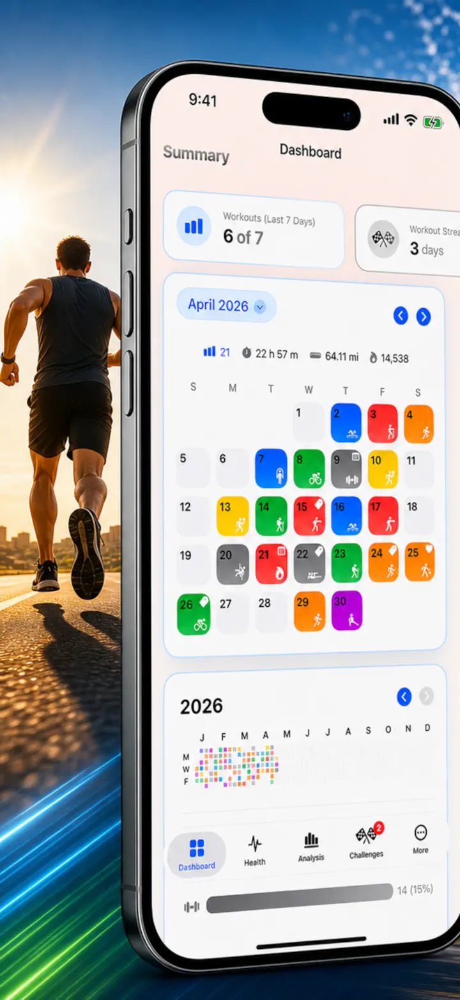
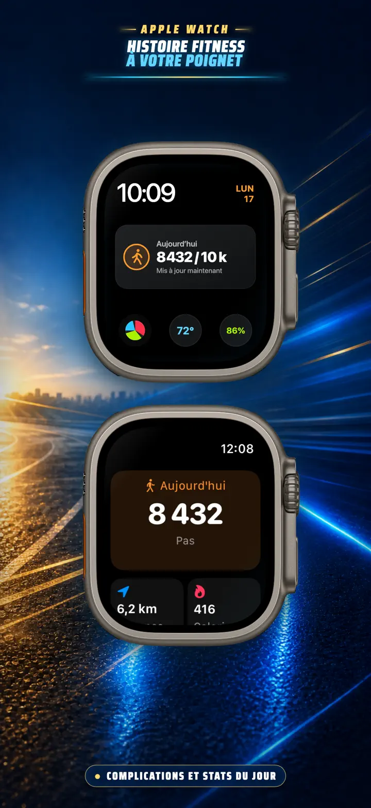
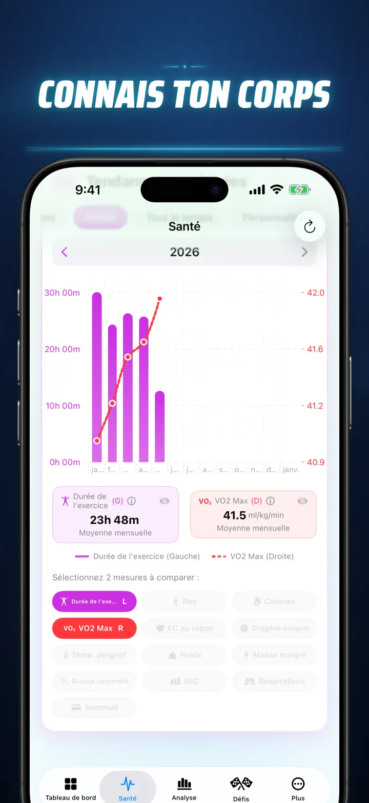
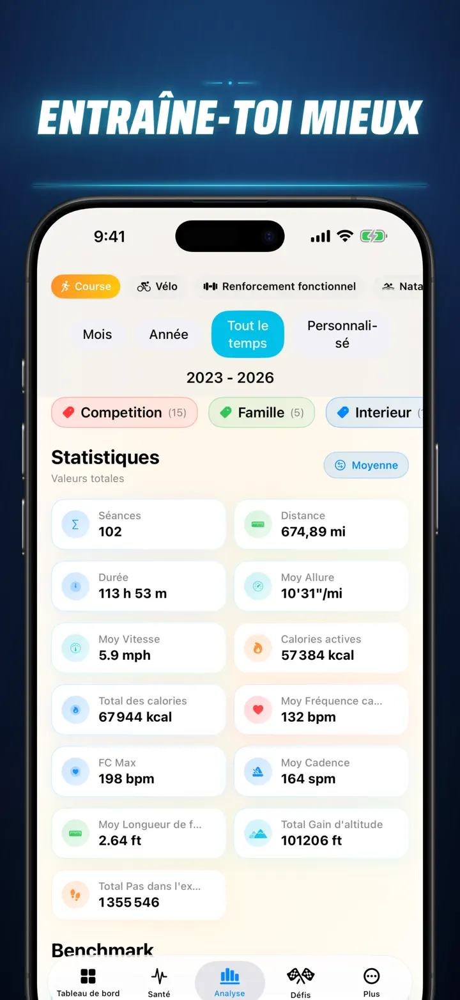
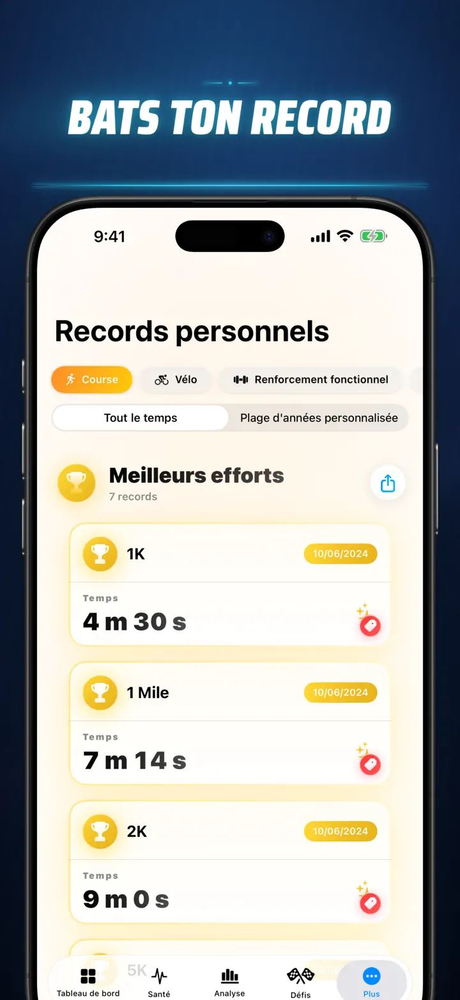
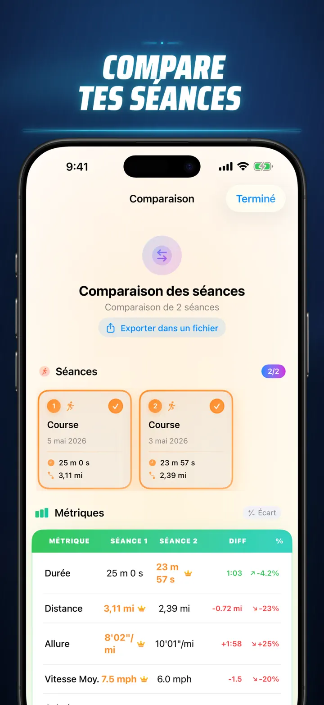
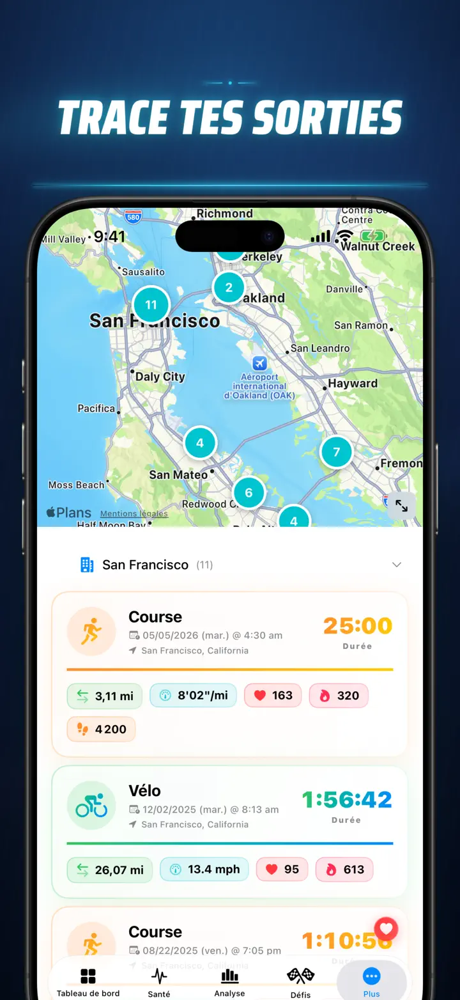
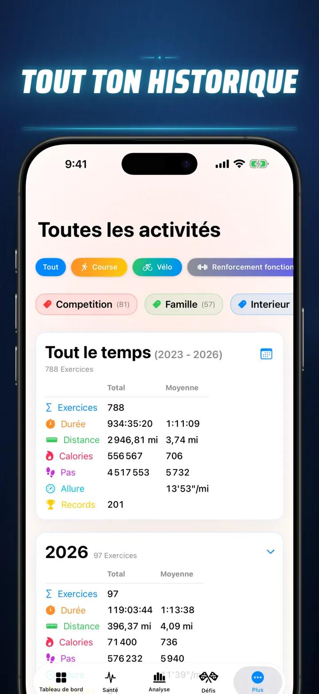

Histoire Fitness
Découvrez vos données fitness
Désormais sur Apple Watch : vos pas du jour sur n'importe quel cadran, plus un écran Aujourd'hui avec distance, calories et étages — directement depuis Apple Santé.
Télécharger dans l’App Store
À propos de l’app
Arrêtez de deviner. Commencez à savoir. Histoire Fitness transforme vos données Apple Santé en l'analyse la plus puissante et détaillée disponible sur iOS. Pas de compte. Pas de serveur. Juste l'intégralité de votre parcours fitness, visualisé.
Que vous suiviez vos phases de sommeil, analysiez votre cadence de course ou visiez un record au marathon, voici le tableau de bord tout-en-un que vos efforts méritent.
Fonctionne avec tout appareil synchronisé avec Apple Santé : Apple Watch, Garmin, Polar, Zwift…
ANALYSE DE NIVEAU PROFESSIONNEL
- Graphiques de Tendance et de Référence : Utilisez des diagrammes en boîte à moustaches pour voir la médiane, les quartiles et les valeurs aberrantes pour chaque type de sport.
- Analyses Détaillées : Filtrez votre historique par Moment de la Journée, plages de Distance, Durée, intervalles d'Allure, Dénivelé positif, Cadence et Longueur de Foulée.
- Classez Tout : D'un simple toucher, classez les métriques du jour (Distance, Allure, FC, etc.) par rapport à tout votre historique. Découvrez immédiatement si vous avez atteint une performance « Top 15% ».
- Graphique de Contribution : Une carte thermique style GitHub de tout votre historique d'entraînements. Retournez-le pour voir les statistiques quotidiennes détaillées.
DÉTAILS D'ENTRAÎNEMENT RÉINVENTÉS
- Cartes Intelligentes : Colorez vos parcours extérieurs par Vitesse, Altitude ou Zones de Fréquence Cardiaque. (Correction de carte pour la Chine incluse).
- Analyse Approfondie des Splits : Consultez les splits au KM ou au Mile avec allure, altitude, FC et cadence pour chaque tour.
- Zones de Fréquence Cardiaque : Visualisez le temps passé en Zones personnalisées 1–5 basées sur votre âge et votre fréquence cardiaque au repos.
- Contexte Enrichi : Ajoutez des photos, des notes formatées, des évaluations d'effort (1–10) et des étiquettes personnalisées à chaque entraînement.
CENTRE DE COMMANDE SANTÉ COMPLET
- Tout ce que mesure votre Apple Watch, visualisé en un seul endroit avec des tendances quotidiennes, hebdomadaires et annuelles :
- Santé Cardiovasculaire : Fréquence Cardiaque au Repos, VO2 Max (ajusté selon l'âge), Oxygène Sanguin et Fréquence Respiratoire.
- Composition Corporelle : Poids, % de Masse Grasse, Masse Maigre et IMC avec indicateurs de tendance.
- Activité et Récupération : Pas (avec répartition horaire), Calories Actives vs. Basales et écarts de Température du Poignet.
- Suivi Avancé du Sommeil : Phases Profond, Core, REM et Éveil visualisées nuit après nuit.
- Superpositions de Corrélations : Superposez plusieurs métriques de santé pour voir comment votre sommeil affecte votre fréquence cardiaque ou comment votre poids impacte votre VO2 Max.
COMPAREZ ET DÉFIEZ-VOUS
- Comparaison d'Entraînements : Sélectionnez jusqu'à 10 entraînements pour les comparer côte à côte. Observez les pourcentages de variation (ex. : « +1,5% Plus Rapide ») pour chaque métrique, par split !
- Export de Comparaison : Vous souhaitez analyser avec d'autres outils ? Exportez votre comparaison d'entraînements !
- Records Personnels : Suivi automatique pour 1K, 5K, 10K, Semi, Marathon et distances personnalisées. Gagnez des trophées Or, Argent et Bronze.
- Chronologie : Un fil chronologique de chaque jalon, record et entraînement que vous avez accompli.
VOS DONNÉES, PARTOUT
- Carte Mondiale : Retrouvez chaque lieu où vous vous êtes entraîné sur une carte mondiale interactive avec regroupement.
- Export Puissant : Exportez tout votre historique (ou des plages personnalisées) en CSV ou JSON. Inclut les données complètes de splits, métriques corporelles et métadonnées.
- Synchronisation iCloud : Vos favoris, étiquettes, notes et évaluations se synchronisent instantanément sur tous vos appareils.
- Vie Privée d'Abord : Aucun serveur caché. Vos données restent sur votre appareil et dans votre iCloud privé.
Privacy Policy: https://masawata.net/privacy-policy.html Terms Of Service: https://www.apple.com/legal/internet-services/itunes/dev/stdeula/
Captures d’écran







Histoire Fitness
Désormais sur Apple Watch : vos pas du jour sur n'importe quel cadran, plus un écran Aujourd'hui avec distance, calories et étages — directement depuis Apple Santé.
Télécharger dans l’App Store